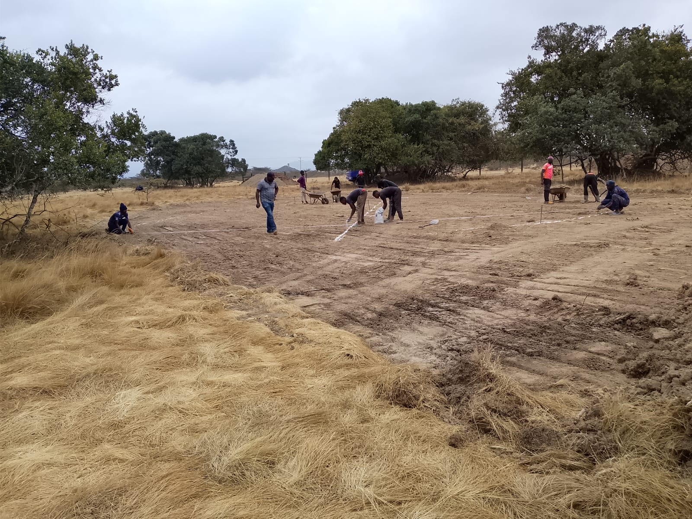

1. Mucheru World of Golf — Dam 3 Excavation, Greens Earthworks, Marking & Fencing
Kickoff of Dam 3 reservoir excavation, overburden clearance on Greens 18, 11, 12 & 17, internal road levelling, precision green survey marking & Farm 3 fence relocation
- Commencement of Dam 3 Reservoir Excavation: Heavy excavation operations officially broke ground on Dam 3. The hydraulic excavator (Sunward SWE210) initiated bulk soil extraction to establish the perimeter rim, embankment slopes, and reservoir basin depth.
- Topsoil Stripping & Tipper Haulage (65 Total Trips): Excavated topsoil and overburden were loaded onto tipper lorries to clear the basin footprint and transport material across designated course levelling zones, completing 65 haulage trips.
- Heavy Machinery Deployment (14 Total Hours): High-capacity machinery operated at full capacity throughout the day, with the hydraulic excavator running for 7 hours and the front loader/backhoe operating for 7 hours.
- Old Roads & Uneven Ground Levelling (Supervised by Joe): The XGMA front loader/backhoe carried out extensive grading across historical course pathways and uneven terrain, pushing and distributing soil mounds to create smooth fairway transitions.
- Chaka Farm 3 Boundary Fence Posts Placement: Treated wooden posts and straining timber poles were transported and placed into position along the boundary line of Chaka Farm 3 in preparation for shifting and securing the property perimeter fence.
| Equipment / Resource | Operating Time / Volume | Operational Scope & Activity |
|---|---|---|
| Hydraulic Excavator | 7 Hours 00 Minutes | Dam 3 basin excavation, reservoir groundbreaking & tipper loading |
| Front Loader / Backhoe | 7 Hours 00 Minutes | Soil levelling on old golf course roads & uneven ground grading |
| Tipper Lorry Haulage | 65 Total Trips | Haulage and relocation of excavated earth and topsoil across course |
🎯 Major Milestone: Dam 3 Excavation Officially Underway
Groundbreaking and bulk earthmoving for the third water storage reservoir (Dam 3) commenced smoothly, expanding the course's overall water conservation capacity.
- Overburden Soil Clearance on 4 Greens: Ground crews and earthmoving equipment systematically stripped and cleared excess topsoil from the foundation footprints of Green No. 18, Green No. 11, Green No. 12, and Green No. 17 down to the design sub-base levels.
- Precision Survey Layout & Stringlining: Guided by architectural master drawings, field teams set up alignment strings and elevation survey stakes across the levelled green footprints.
- Chalk Contour & Grid Marking (Overseen by Mr. Gichuhi): White lime chalk was applied to establish the exact putting surface geometries, green collars, and drainage contours on Green No. 18 and Green No. 11, ready for sub-base rock foundation laying.
📷 Mucheru World of Golf Visual Documentation

Dam 3 Reservoir Basin Groundbreaking
Sunward hydraulic excavator actively carving out the basin floor and banks of the new Dam 3 reservoir.

Dam 3 Topsoil Stripping & Truck Loading
Excavator loading stripped topsoil into a yellow tipper lorry across the open course ground at Dam 3.

Dam 3 Basin Profile Shaping
Elevated perspective of the excavated reservoir basin bowl with fresh earth mounds and haulage trucks on site.
.jpeg)
Course Soil Levelling (Supervised by Joe)
XGMA backhoe loader smoothing rough ground profile with site supervisor Joe overseeing elevation grading.

Internal Roadway & Uneven Ground Grading
Backhoe bucket pushing and levelling heavy soil heaps along old internal golf course roadway corridors.

Pathway Levelling Adjacent to Green Foundations
Grading of internal access route running alongside newly established red soil and stone green foundations.
.jpeg)
Mr. Gichuhi Overseeing Green Marking Setup
Mr. Gichuhi (in white cap) photographing survey teams using alignment stringlines and wheelbarrows on the cleared green.

Survey Stringlines & Grid Layout
Ground crews carefully pulling measuring lines and positioning survey pegs across the graded green bed.

Green Survey Grid Chalking
Uniform grid layout marked with white lime chalk to define contours and foundation levels on the putting surface.

Putting Green Perimeter & Contour Outlines
Complete putting green geometry and perimeter boundary clearly chalked on the levelled earth bed.

Chalk Grid Intersection Detail
Close-up view of intersecting chalk reference lines and guide stakes establishing the putting green layout.

Chaka Farm 3 Boundary Fence Post Alignment
Treated timber posts and corner straining poles positioned along the boundary line for fence shifting operations.
2. Chaka Farms — Dairy Milking Yield, Livestock Health & Canine Training
Daily milk production logs, goat kid mortality update, canine manners & multi-species animal socialization (goats & chickens)
- Morning & Evening Milking Logs: Daily milking completed smoothly under Kamandau's supervision, recording a total yield of 6.0 Litres of fresh milk (Morning: 4.0 Litres | Evening: 2.0 Litres).
- Livestock Mortality & Veterinary Report: A goat kid was found dead in the morning. The kid had been attended to and treated by a veterinary professional on the previous day (Saturday).
| Production Session | Morning Milking | Evening Milking | Total Daily Yield |
|---|---|---|---|
| Fresh Milk Yield | 4.0 Litres | 2.0 Litres | 6.0 Litres |
- Kennel Cleaning & Morning Protocols: Thorough washing, disinfection, and drying of all canine accommodation runs and sleeping stalls.
- Kennel Manners & Impulse Control: Exemplary boundary manners strictly observed by all dogs, holding steady sit-stays before door opening and food bowl presentation.
- Paw Commands, Patience & Obedience Drills: Intensive skill sessions focusing on paw gestures, focused attention, recall drills, and extended impulse control with highly positive responses from all dogs.
- Pasture Off-Leash Walking & Goat Socialization: The dogs enjoyed structured off-leash field walking, maintaining calm proximity and relaxed demeanor while socializing alongside pastured goats.
- Socialization with Free-Range Chickens: Controlled exposure training conducted with farm chickens; the dogs displayed complete composure, non-reactivity, and gentle curiosity under Willy's guidance.
📷 Chaka Farms Visual Documentation

Livestock Mortality — Deceased Goat Kid
Goat kid found deceased in the morning near the shelter wall following veterinary medical intervention on Saturday.
3. Amani Cottage — Grounds Sprinkler Irrigation & Upkeep
Lawn rotary sprinkler irrigation and grounds moisture maintenance
- Rotary Sprinkler Lawn Irrigation: High-coverage rotary sprinkler irrigation systems deployed across the front lawn, ornamental planting beds, and surrounding grounds to ensure optimal soil moisture and sustain lush turf growth.